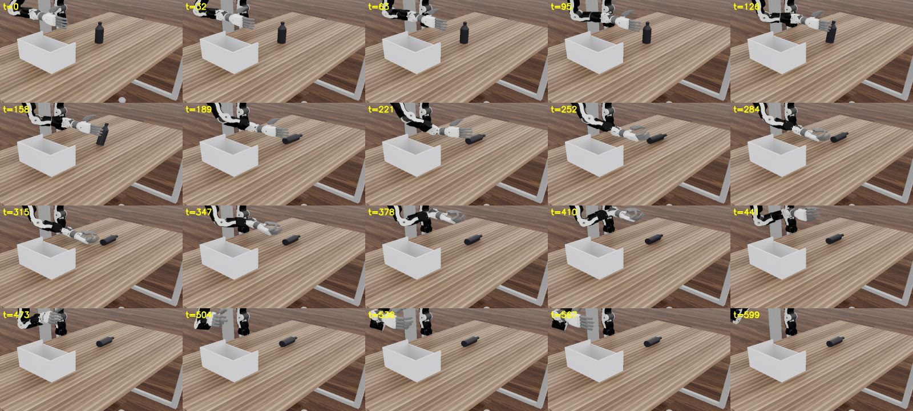

01Result
One episode of the learned policy from a fixed third-person camera. The bottle never moves; the arm is visually unchanged from t≈158 to the end.

02Four quantities, three survive
Two days of notes had conflated four different measurements. Separating them dissolves an apparent contradiction between "the predicted closing rate decays to zero" and "the model commands 5–8 cm every chunk".
| # | Quantity | Pred / achieved | Directed? | Frame | Status |
|---|---|---|---|---|---|
| 1 | closing rate on target, d/dt‖tip−obj‖ | predicted | signed, target-directed | camera | survives |
| 2 | ‖predicted chunk-end wrist − actual wrist‖ | predicted | magnitude only | camera | survives |
| 3 | ‖actual wrist(t) − actual wrist(reset)‖ | achieved | magnitude only | world | survives |
| 4 | "learned stopping distance ≈ 10.6 cm" | inference from 1 + a histogram | — | — | struck |
#1 is signed and points at the object; #2 is an undirected magnitude. A policy commanding 6 cm per chunk in directions with no component closing on the object satisfies both. World frame matters for #3 — the head camera is mounted on the robot, so a camera-frame displacement is not a displacement.
03Commanded versus realised
Mean over 24 envs, one reading per 20-step chunk. The arm demonstrably can move 8–9 cm in a chunk — that is what makes the collapse to 1 cm informative rather than routine.
| t | commanded (cm) | achieved this chunk (cm) | net displacement (cm) | wrist IK residual (cm) |
|---|---|---|---|---|
| 20 | 14.5 | 8.8 | 8.8 | 0.10 |
| 40 | 10.8 | 9.3 | 17.9 | — |
| 100 | 5.6 | 3.7 | 29.1 | — |
| 200 | 5.5 | 1.0 | 28.1 | 4.4 |
| 280 | 6.6 | 0.5 | 28.7 | 8.5 |
| 500 | 8.6 | 0.14 | 28.9 | 7.4 |
| 580 | 5.8 | 0.51 | 29.1 | 5.6 |
Per-site residual at t=280: wrist 8.48 against tips 7.23 / 3.68 / 6.69 / 4.44 / 4.53. The wrist is the worst site. A simply-unreachable pose would have the solver sacrifice the hardest fingertip and hold the wrist — the wrist is a 7-dof arm target with enormous freedom, the tips are the constrained ones. Wrist-worst means the solver is spending arm freedom chasing fingertips it can never reach: over-constraint, which would persist even with unlimited joint range. The branch was named by dpp-iclr27, who had documented the same mechanism when adding fingertip_target_scale for the hand-swap study.
04Reproduced with no simulator
The real solver, run offline on CPU outside Isaac — no sim, no policy, no physics, no contact. Control first: solving for the hand's own mid-range pose returns per-site residual exactly 0.000, so the harness is valid before anything rests on it.
| fingertip target scale | wrist (cm) | tips mean (cm) | worst site |
|---|---|---|---|
| 1.00 | 0.89 | 0.44 | wrist |
| 0.80 | 0.33 | 0.34 | index |
| 0.60 | 0.25 | 0.37 | little |
| 0.40 | 0.56 | 0.67 | little |
Wrist residual falls monotonically as the fingertip targets shrink, then reverses once the target becomes unnaturally compressed. Unreachability is excluded because the wrist does improve. Equal site weighting is explicit rather than inferred: keypoint_ik asserts position_cost_wrist == position_cost_fingertips in its constructor.
The embodiment gap, measured
The 12 keypoints are a MANO human hand skeleton by construction (egodex_flow.py:97-103, joints [0,4,8,12,16,20] of a 21-joint layout) with no retarget step to the executing hand. Against the Inspire hand's achievable wrist-to-fingertip distance sampled over its whole joint box:
| finger | hand max (cm) | human mean (cm) | beyond reach | scale for p90 |
|---|---|---|---|---|
| thumb | 12.25 | 10.76 | 1.1% | 1.00 |
| index | 15.75 | 14.79 | 25.4% | 0.93 |
| middle | 16.60 | 15.62 | 34.4% | 0.93 |
| ring | 15.83 | 14.71 | 38.1% | 0.92 |
| little | 14.03 | 13.09 | 28.5% | 0.92 |
The gap decomposes. Per-finger length says a 0.92 scale suffices, and the thumb is exempt — the human thumb is shorter than Inspire can extend. But the coupled solve wants 0.6–0.8. That difference is the coupling deficit: each finger can individually reach that far; the hand cannot put all five there at once, because 12 gear-coupled dofs cannot independently satisfy five fingertip positions plus a wrist. The coupling term is the larger one, and it is a property of hand design rather than size, so no static geometric map closes it.
Provenance, because these numbers are meaningless without it: source 0501_pnp_500_v2_b0_shrink20/rlwrld_final.h5, 499,117,394 bytes, 2026-05-05, sha256[:32] f9acf24819ceb3c5bd7b9c333b692979, 479 episodes. Measured on the raw h5 and on the derived WDS independently — they agree to 0.08 cm per finger, so the extraction adds no scaling. A different h5 generation used elsewhere in the lab reports a longer thumb; those numbers are not comparable to these and the diff is open.
05Diagnosis
- ✓The execution path is not the reach bottleneck.A privileged-state oracle through the identical IK and grip controller puts a fingertip inside 5 cm in 24 of 24 episodes, mean 1.87 cm, min 0.19 cm, wrist tracking 0.40–0.51 cm. The learned policy on the same harness: best 10.40 cm, 1 of 48.
- ✓The fingers track.Three independent reads: DPP median |commanded − achieved| 0.000°, this policy within 6° at steady state, matching transient signatures. Hand model, actuators, gear coupling and the grip hook are exonerated.
- ✓Not stuck on the table.At the stall the wrist sits 10–11 cm above the tabletop. Fingertips do descend to ~2 cm, but the wrist — the site with the largest residual — is nowhere near contact.
- ✓Not a scale mismatch at the stall.Predicted-to-actual wrist→fingertip span ratio climbs from 0.68 early to 0.93–0.96 by t=120–200: by the time it stalls the model asks for a hand essentially the size of the one it has, while the wrist residual is above 5 cm. Configuration infeasibility, not scale.
- ✓Not a solver budget.The repo already records a K20↔K50 residual plateau, and DPP runs at ~3.3 cm policy-target residual and still succeeds.
- →The commanded 6-point configuration is not one this hand can form, and the solver pays with the wrist.Residual is pre-physics, monotone with approach, wrist-worst, and reproduces offline with no simulator. Scoped honestly: wrist-worst is not intrinsic to the abstraction — DPP on this same hand sits at 0.51 cm and is not wrist-worst. It is a statement about how far this model's predicted geometry drifts from the feasible manifold.
06Claims made and killed today
A record containing only survivors is indistinguishable from one that was never tested. Two survived scrutiny; four did not.
- ✗"The fingers curl", from render frames.The hand rotates away from the camera between the frames compared, so foreshortening and curl are indistinguishable there. Caught by dpp-iclr27 before it was used.
- ✗"IK tracking is configuration-dependent at 17 cm."Caused by an elementwise torch.maximum over x,y,z where only z was meant — the hand was commanded to a waypoint at neither the object nor the home pose. Withdrawn seven minutes after being sent.
- ✗"Achieved finger angles are half commanded."A single sample of a lagging PD controller is indistinguishable from a broken one. The next sample showed achieved overshooting a falling command.
- ✗"The model asks for a hand with longer reach."The live span instrument says the opposite early in an episode — ratio 0.68–0.77, a more curled hand than the robot holds. The training targets are 25–38% out of reach; the model's predictions are not.
07Timeline
-
2026-08-01
Oracle: the harness can reach, the policy cannot
A scripted privileged-state policy through the identical IK and grip path reaches the bottle in 24 of 24 episodes. It still scores 0/24 — watched rather than inferred, it knocks the bottle over and closes on empty table beside it, which is that oracle's naive grasp geometry rather than a harness defect.

oracle-strip.jpg · privileged oracle · bottle · knock-over at t≈158 -
2026-08-01
"Learned stopping distance" struck
Commanded-versus-achieved instrumentation shows the model never stops asking for motion. The IK residual is measured for the first time and is wrist-worst.
-
2026-08-01
Over-constraint reproduced offline
The same signature appears in the real solver on CPU with no simulator, no policy and no contact, against a control that returns exactly zero. The embodiment gap is measured and decomposes into a length term and a larger coupling term.
08Next
- ·Deploy-side retarget shim.Keep the model's wrist trajectory, substitute a feasible finger shape. Pre-flighted offline against displaced wrist targets: wrist residual 1.29 → 0.47 cm, a 64% reduction and better than every fingertip scale — a scaled human shape is still not a shape this hand can form.
- ·Per-finger scales, not one global.A single scale is set by the binding finger (0.92) and over-shrinks a thumb that was never out of reach.
- ·IK residual versus training budget.Far more sensitive than success rate, and it has a pre-registered target: the geometric floor left when the best feasible pose is fitted to an infeasible human target. Converging to the floor means finetuning has done all it can; stalling above it means model error remains.
09Artifacts & repro
- ·Checkpoint/virtual_lab/sjw_alinlab/beomjun/dpp_ckpts_1p9s/pnp500_ft_ext1/model-best.pt
- ·Instrumentationopenarm_sim/parallel_eval/ik_forensics.py · policy_pointwam._log_execution · policy_oracle_kp.py
- ·Offline harnessik_shape_feasibility.py · retarget_scales.py · preflight_rigid.py (CPU, no Isaac app)
- ·Full reportopenarm-sim/DEXPOINTWAM_SIM_CAMPAIGN.md — 2026-08-01 addendum
sbatch scripts/eval_oracle_kp.sbatch # ORACLE_TIP_SHRINK · ORACLE_APPROACH
sbatch scripts/kp_scale_sweep.sbatch # PWAM_KP_SCALES=1.0+rigid+0.8+0.6
sbatch scripts/render_pointwam_3p.sbatch # third-person view + contact sheet